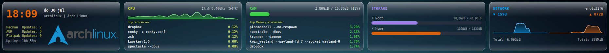
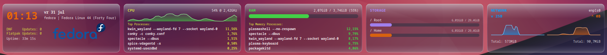

conky-horizontal
A liquid-glass system bar for Conky


Five panels, one bar
widget.lua · single file · Lua + CairoA single-file, all-Lua/Cairo horizontal system monitor for Conky, styled after real liquid glass — layered gradients, a specular highlight, and a soft frosted tint over your wallpaper. Date & time, updates, CPU, RAM, storage and network, all in one wide strip across the top of the screen.
Time & Updates
Clock, date, hostname, and uptime. Pacman (checkupdates) plus optional AUR and Flatpak counts, each stacked on its own line.
CPU
Live load graph that shifts green → yellow → red with load. Frequency and temperature straight from /sys/class/hwmon — no lm_sensors needed. Top 5 processes.
RAM
Usage bar with used/total, plus the top 5 processes by memory.
Storage
Usage bars for / and /home, with used/size shown alongside each.
Network
Live up/down speed and session totals, with side-by-side auto-scaling graphs — each capped at its own configurable MB/s ceiling.
Quick install
$ git clone https://github.com/wim66/conky-horizontal.git ~/.conky/conky-horizontal
$ cd ~/.conky/conky-horizontal
# edit CFG in widget.lua — at minimum, set network_iface
$ conky -c conky.conf
Per-graph settings
Height, color, fill/line opacity, and history length are configurable independently for the CPU, download, and upload graphs.
Optional logo
Drop in a logo.png, set its x/y and a height — width follows the image's own aspect ratio automatically.
Two files to sync
conky.conf handles the window; widget.lua handles everything else — layout, drawing, data, caching.